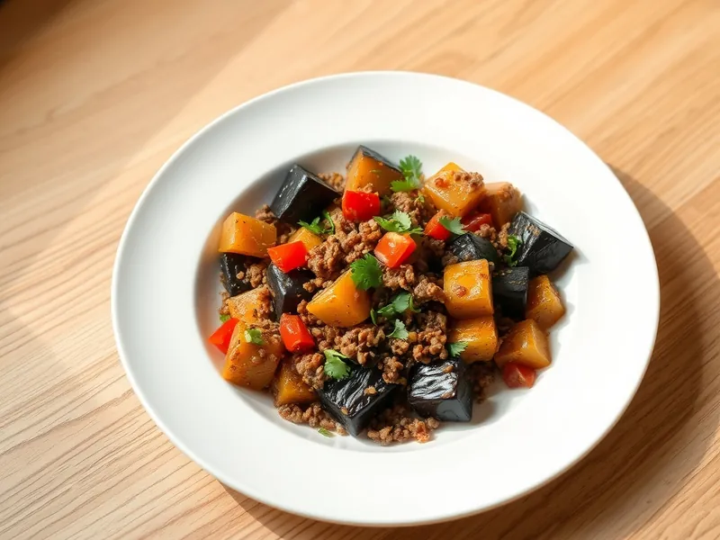

Фото: Иллюстрация ИИ, Cloudflare Workers AI
Баклажаны с фаршем на сковороде
Кубики баклажана с говяжьим фаршем, помидорами и чесноком на одной сковороде
30 мин4 порц.428 ккал на порциюБ 20 · Ж 33 · У 12Средиземноморская кухня
Открыть в приложении: порции, таймеры, список покупок
Продукты на 4 порц.
- Баклажан2 шт
- Говяжий фарш400 г
- Лук репчатый1 шт
- Помидоры2 шт
- Чеснок2 зуб.
- Растительное масло3 ст. л.
- Соль1 ч. л.
- Перец чёрный молотый1 щеп.
- Кинза по желаниюпо вкусу
Как готовить
- Нарежьте баклажаны кубиками 2 см, лук мелко, помидоры кубиком, 6 минут.
- Разогрейте 2 ложки масла на среднем огне и обжарьте баклажаны 8 минут, помешивая, до мягкости и золотистого цвета. Переложите в тарелку.
- На оставшемся масле обжарьте лук 3 минуты, добавьте фарш и жарьте 6 минут, разбивая лопаткой, до коричневого цвета.
- Добавьте помидоры, чеснок, соль и перец, жарьте 3 минуты.
- Верните баклажаны, накройте крышкой и тушите на слабом огне 4 минуты. Посыпьте зеленью.
Совет. Баклажаны впитывают масло как губка: не подливайте его, а накройте сковороду крышкой на пару минут, они дадут сок и не пригорят.